О проекте
Любите кофе? В NUTS Digital особое отношение к этому чудесному напитку с самого основания.
В последние годы вокруг кофе сложился целый культ:
- в каждой кофейне есть классические напитки, но есть и фирменные, которые “не по канону”;
- любой, кто не наливает растворимый, тут же начинает двигать в массы идеологию “правильного” кофе;
- любовь к кофе у потребителя не зависит от его социального статуса и достатка.
Кофе любят все! Но особенно сильно — The Coffee Soldiers.
О клиенте
Компания «The Coffee Soldiers Roasting Company» за 10 лет на рынке настолько преисполнилась, что все связанные с кофе бизнес-процессы ей абсолютно понятны.
Ребята сами выбирают и доставляют кофе, жарят в собственной роастерии, поставляют партнёрам. Обслуживают и дают в аренду оборудование, помогают с поставкой и подготовкой воды, обучают бариста.
The Coffee Soldiers хотят сформировать у всех участников кофейного рынка экспертный взгляд на кофе, помочь каждому партнёру решить часть производственных проблем, и делать бизнес с удовольствием.
Подробнее на tcs.coffee
Цель
Сделать адаптивный лендинг, который запомнится и максимально выделит компанию на фоне конкурентов. Собрать лиды впечатлительных и заинтересованных.
Задачи
- Показать каталог кофе собственной обжарки и матрицу цен в зависимости от объёма поставки;
- Рассказать о The Coffee Soldiers и их позиции на весьма объёмном и активном рынке;
- Рассказать об основных направлениях деятельности компании.
Дизайн
Фирменный стиль и брендбук у The Coffee Soldiers шикарный. Дерзкий зелёный, крупные черные надписи, паттерны из логотипа (начертание позволяет), стильные искажения и графические элементы вызвали у дизайнеров NUTS Digital активное желание немедленно сделать что-то крутое.
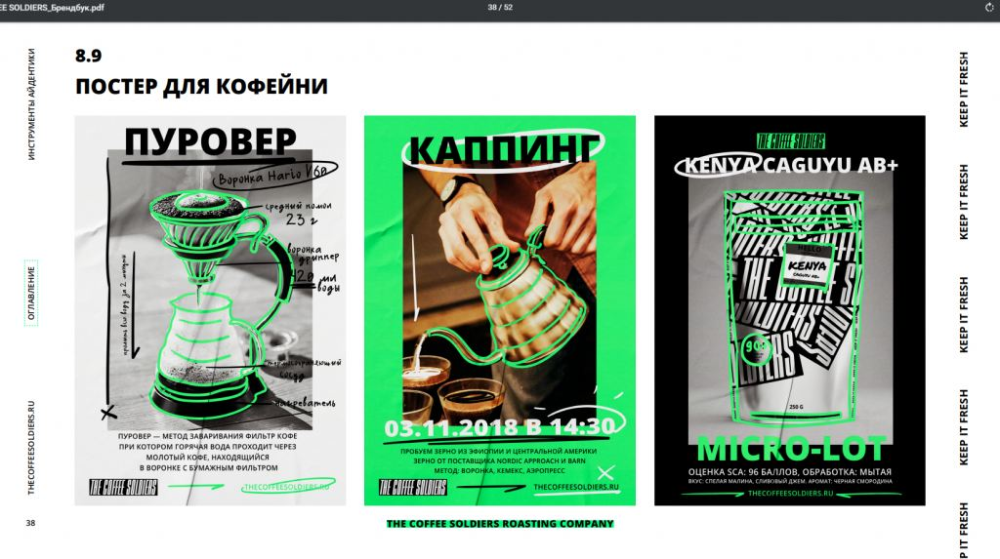
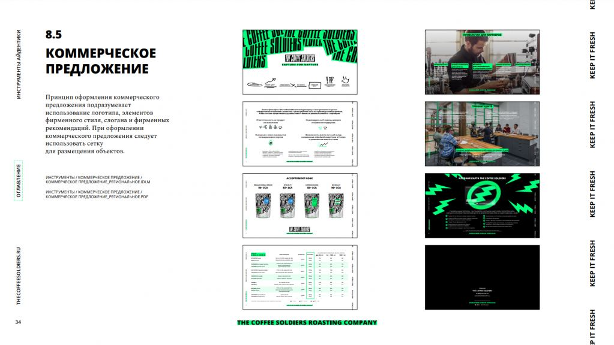
Концепция
При создании концепта мы старались придерживаться трёх тезисов:
- кофе — определённо один из узнаваемых символов современной культуры, будем использовать другие, не менее узнаваемые
- стиль The Coffee Soldiers яркий, смелый, дерзкий, поразительный, и дизайн сайта тоже должен быть таким;
- пользователю интерфейс сайта должен быть виден, понятен и удобен.
Чтобы запастись узнаваемыми символами современной культуры, дизайнеры провели опрос в команде на тему “Твоя любимая фотография, картина, фильм”. Совпадения занесли в списочек, и приступили к работе.
Концепт получился очень смелым и креативным. Настолько смелым, что перед презентацией мы подготовили анимацию первого экрана, чтобы точно донести наше видение клиенту.
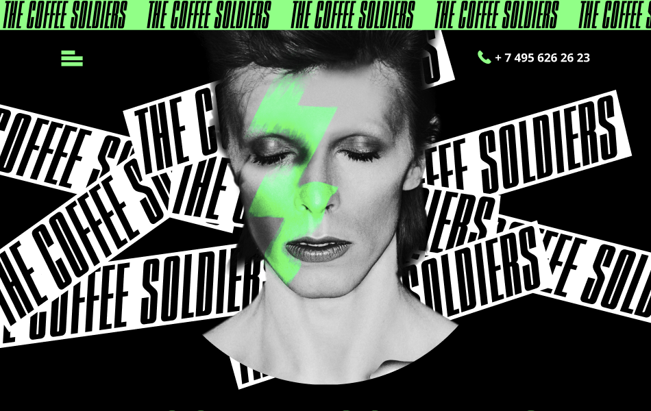
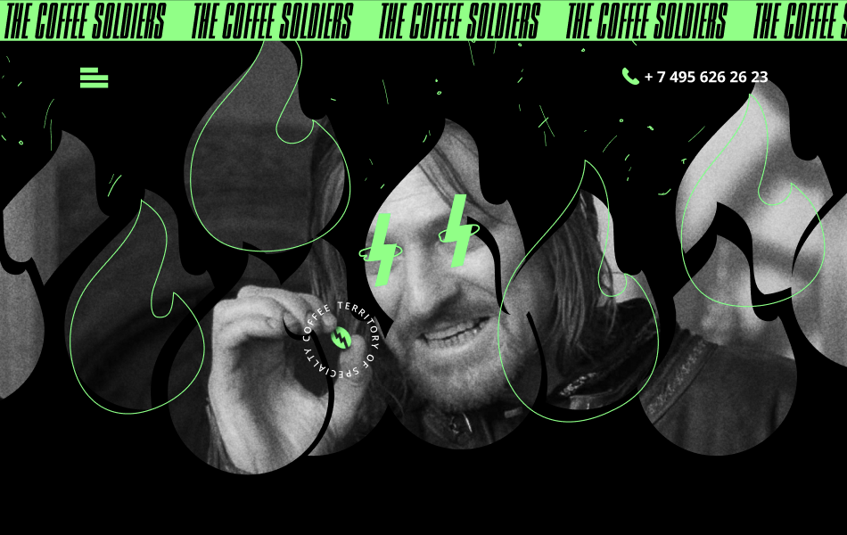
Честно говоря, не каждый клиент решился бы на такие эксперименты. Нам с The Coffee Soldiers повезло несказанно (это взаимно :-).
Спасибо вам, TCS! Очень приятно работать, когда тебе доверяют практически безоговорочно.
Фишки и изюминки
Сотворение мира не обошлось без чашечки specialty кофе.
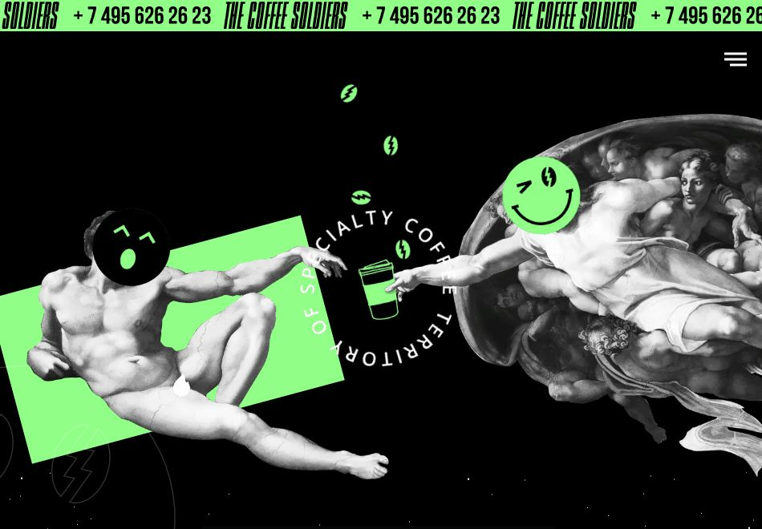
Эпичная подача вступительного текста в стиле Star Wars.
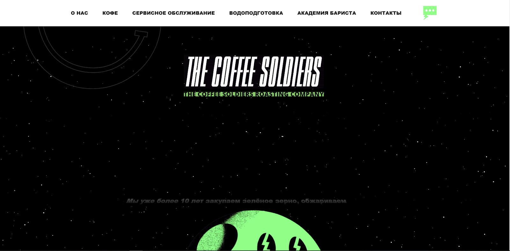
Новая серия! Учитель химии и его друг берут в аренду кофейное оборудование, и становятся членами экспертного комьюнити в узнаваемой компании 12.
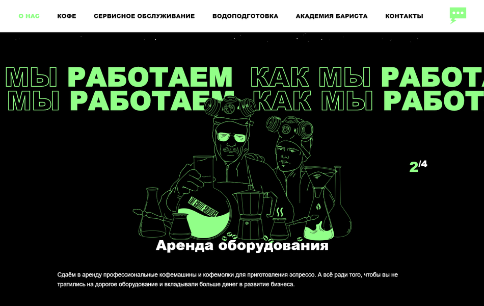
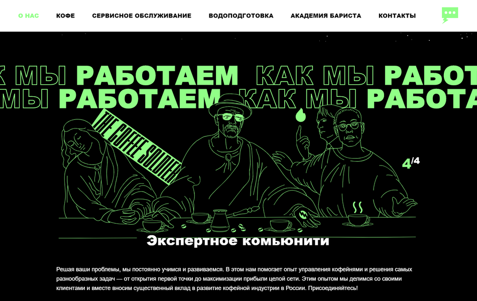
Презентация каталога кофе собственной обжарки с возможностью фильтрации по линейке и поставляемому объёму. Больше берёте - меньше цена ;-)
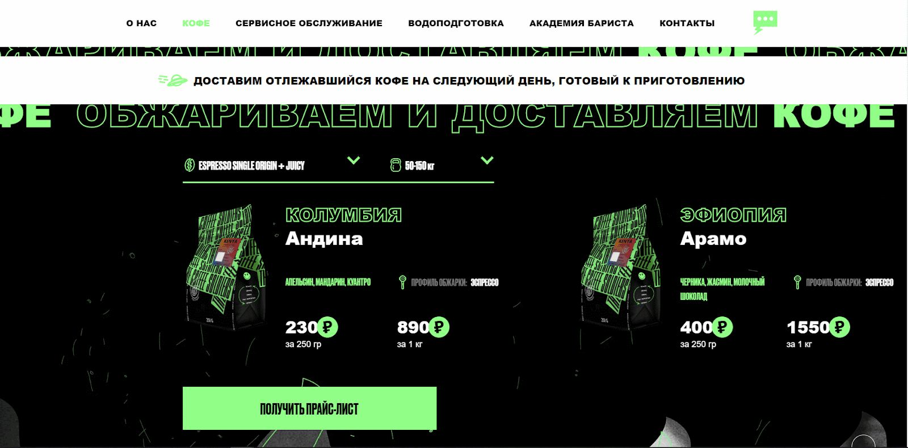
Рассказываем с помощью оригинального слайдера, как поэтапная фильтрация воды защищает ваш эспрессо от микроорганизмов, минералов, тяжёлых металлов и вирусов, и делает каждую чашку ещё вкуснее!
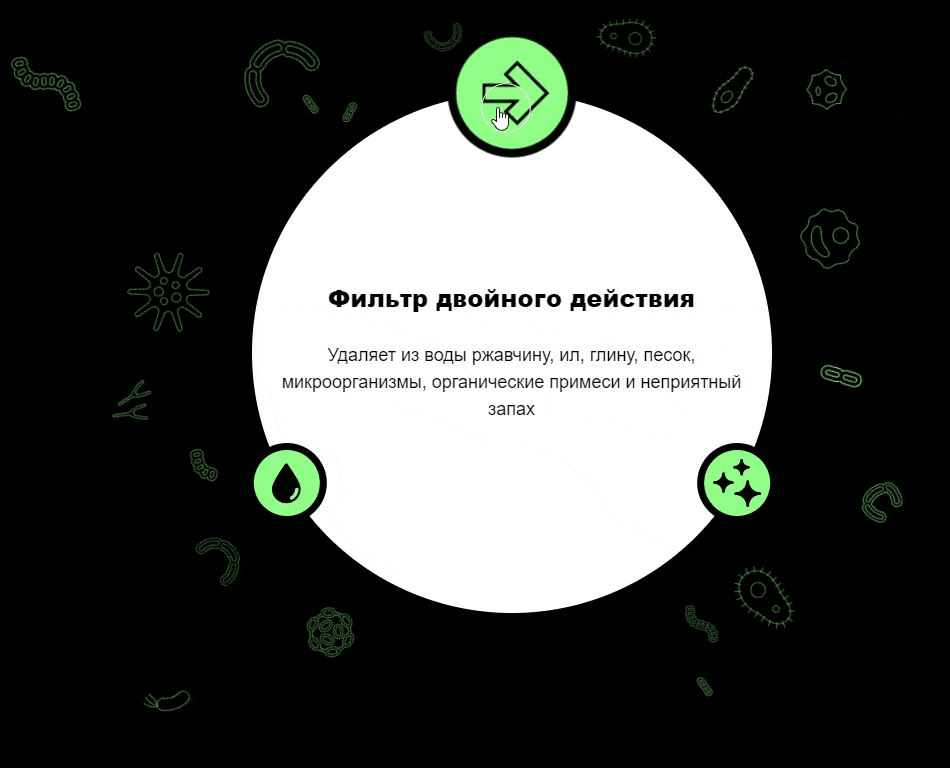
Результат
Лендинг, который не просто выполняет свои задачи, а делает это стильно и интересно. Сайт, который хочется показывать клиентам. Кейс, которым трудно не гордиться :-)
Серьёзно, посмотрите на сайт, он очень крутой!
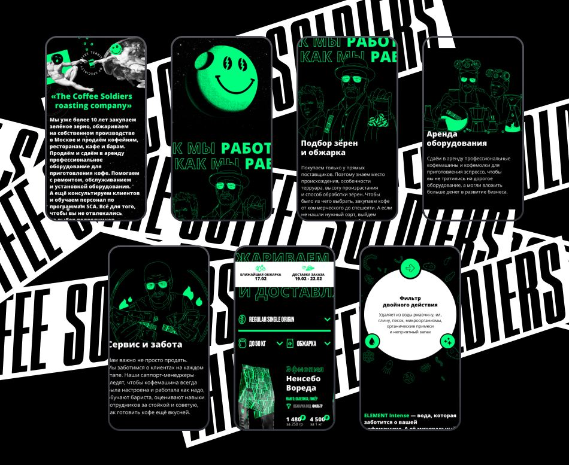